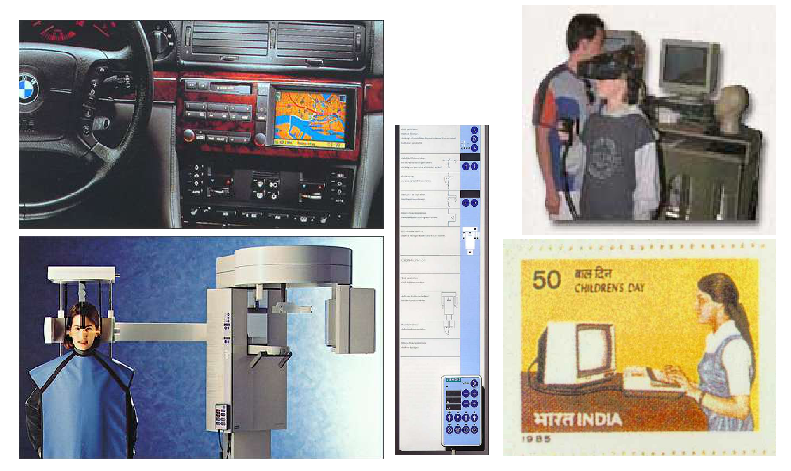
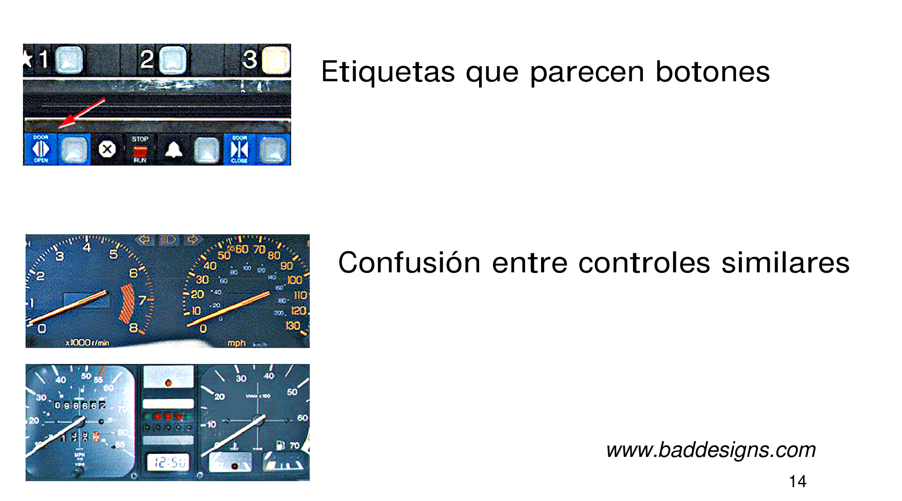
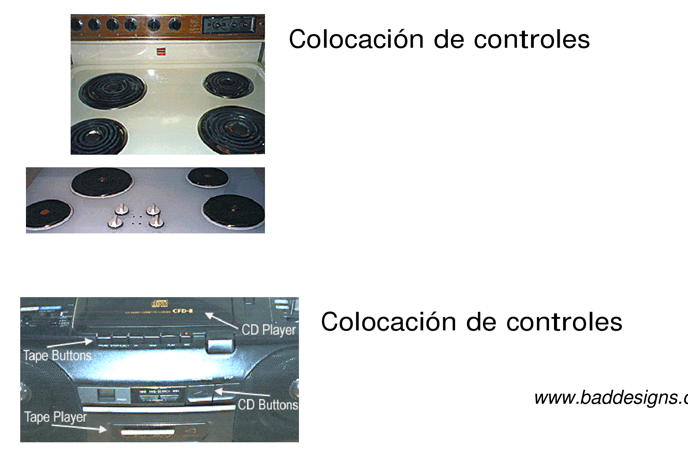
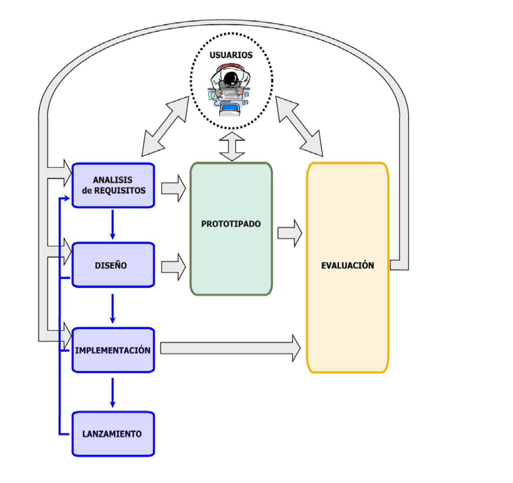

Introducción a la IPO
Tema 1 de 7 Cuarto curso, 1.º cuatrimestre ≈ 6 min de lectura
Temas de IPO · 1/8
1.1 Interacción persona-ordenador
La Interacción Persona-Ordenador (IPO) es la disciplina que se ocupa del diseño, la implementación y la evaluación de sistemas informáticos interactivos, es decir, de sistemas que una persona usa directamente.
Su objetivo es desarrollar o mejorar la seguridad, utilidad, efectividad, eficiencia y usabilidad de los sistemas que incluyen ordenadores. Para conseguir sistemas usables hace falta comprender los factores psicológicos, ergonómicos, organizativos y sociales que determinan cómo trabaja la gente y cómo usa los ordenadores, desarrollar herramientas y técnicas que ayuden a los diseñadores, y lograr una interacción eficiente, efectiva y segura.
La idea central de la asignatura es que no son los usuarios quienes tienen que cambiar radicalmente su forma de ser, sino que los sistemas deben diseñarse para satisfacer sus requisitos.
1.2 Interfaces de usuario
Una interfaz es la superficie de contacto entre dos entidades; en la IPO, esas entidades son la persona y el ordenador. Toda interfaz debe tener dos cualidades: visibilidad para el usuario y comprensión intuitiva (affordance), es decir, que se entienda dónde hay que actuar y cómo. En la vida cotidiana hay interfaces por todas partes: el salpicadero de un coche, una máquina médica, un casco de realidad virtual, un teclado...

Analogía: la manilla de la puerta
Una puerta con una manilla "te dice" que tires de ella; una placa plana, que empujes. Eso es la affordance: la forma del objeto comunica cómo se usa sin necesidad de instrucciones. Cuando una puerta con manilla hay que empujarla, todo el mundo se equivoca: es un mal diseño de interfaz.
Distintos autores la han definido de formas complementarias:
| Autor | Definición de interfaz |
|---|---|
| Moran | Los aspectos del sistema con los que el usuario entra en contacto |
| Laurel (1992) | Una superficie de contacto que refleja las propiedades físicas de quienes interactúan, en la que se tienen que intuir las funciones y que da un balance de poder y control |
| Negroponte (1994) | Donde los bits y las personas se encuentran |
| Chi | Un lenguaje de entrada para el usuario, un lenguaje de salida para el ordenador y un protocolo para la interacción |
En resumen, son las partes del sistema con las que el usuario entra en contacto física y cognitivamente: la interacción física (teclado, ratón, pantalla...) y la interacción cognitiva (lo que se le presenta debe ser comprensible para él).
1.3 Disciplinas relacionadas con la IPO
La IPO es multidisciplinar: se nutre de la psicología, el diseño, la sociología, la ergonomía, la programación, la ingeniería del software y la inteligencia artificial.
1.4 Usabilidad
Para que un sistema interactivo cumpla sus objetivos, tiene que ser usable y accesible para la mayor parte de la población. La usabilidad es:
La medida en la que un producto se puede usar por determinados usuarios para conseguir unos objetivos específicos con efectividad, eficiencia y satisfacción en un contexto de uso dado.
Un software usable es fácil de utilizar (hace la tarea para la que se usa) y fácil de aprender (permite hacer las tareas rápido y sin errores). La mejor forma de resumirlo: una aplicación usable es la que permite al usuario centrarse en su tarea, no en la aplicación.
Los problemas de usabilidad aparecen en objetos cotidianos, como muestran los ejemplos de baddesigns.com: etiquetas que parecen botones, confusión entre controles similares (dos salpicaderos con indicadores casi iguales) y una mala colocación de controles (una vitrocerámica en la que no se sabe qué mando corresponde a qué fuego, o botones de un equipo de música mal situados).


En la vitrocerámica de arriba no está claro qué mando enciende cada fuego; en el equipo de música, los botones del CD y de la cinta están mezclados.Los principios generales de usabilidad son:
- Facilidad de aprendizaje
- Flexibilidad
- Consistencia
- Robustez
- Recuperabilidad (poder deshacer o recuperarse de errores)
- Tiempo de respuesta
- Adecuación de las tareas
- Disminución de la carga cognitiva
1.5 El diseño centrado en el usuario
Diseñar sistemas interactivos implica pensar en el usuario durante todo el desarrollo: el proceso se centra en él, se le implica tanto como sea posible (incluso dentro del equipo de diseño), se observa su trabajo habitual y se hacen prototipos, escenarios o maquetas para que pueda ir evaluando el diseño a lo largo de todo el ciclo de vida.

El eje de la izquierda es el ciclo clásico (análisis de requisitos → diseño → implementación → lanzamiento); a su lado, el prototipado y la evaluación, y en el centro los usuarios, que participan en todas las fases. Las flechas de vuelta indican que es un proceso iterativo.Cada fase del modelo agrupa una serie de actividades:
| Fase | Actividades |
|---|---|
| Análisis de requisitos | Análisis etnográfico, perfil de usuario, análisis contextual de tareas, actores, roles y organización, listas de tareas, objetos, plataforma, perfil del entorno, objetivos de la usabilidad y de la aplicación |
| Diseño | Análisis de tareas, modelo conceptual, definir estilo (estándares generales, metáforas, colores, estándares particulares), diseño detallado |
| Prototipado | Maquetas, escenarios, prototipos de papel, storyboards, herramientas de diagramación, vídeos, prototipos software |
| Evaluación | Inspección (heurística, recorrido de usabilidad plural, recorrido cognitivo, estándares); indagación (observación de campo, focus group, entrevistas, logging, cuestionarios); test (medida de las prestaciones, thinking aloud, interacción constructiva, test retrospectivo, método del conductor) |
El prototipado y la evaluación se desarrollan en el tema 3.
1.6 Ideas clave
- IPO: diseño, implementación y evaluación de sistemas interactivos; busca seguridad, utilidad, efectividad, eficiencia y usabilidad. El sistema se adapta al usuario, no al revés.
- Interfaz: superficie de contacto persona-ordenador; necesita visibilidad y affordance. Contacto físico y cognitivo. Definiciones de Moran, Laurel, Negroponte y Chi.
- Disciplinas: psicología, diseño, sociología, ergonomía, programación, ingeniería del software, IA.
- Usabilidad: efectividad, eficiencia y satisfacción de usuarios concretos con objetivos concretos en un contexto dado. Usable = fácil de usar + fácil de aprender; centrarse en la tarea, no en la aplicación. 8 principios (aprendizaje, flexibilidad, consistencia, robustez, recuperabilidad, tiempo de respuesta, adecuación, carga cognitiva).
- Diseño centrado en el usuario: el usuario participa en todo el ciclo; fases de requisitos, diseño, prototipado y evaluación, de forma iterativa.